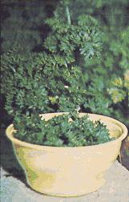

Jean W. Lyon Some good things come in small quantities . . . such as the parsley served alongside meat dishes and on casseroles. Few people realize that the intensely green sprigs are a storehouse of iron and vitamin C, and can contain as much as 30,000 international units of vitamin A per ounce (making them among the richest known sources of that nutrient).
Parsley, of course, also has quite another culinary value that's even more important than its nutritional value (since few of us ever eat enough of the plant to "cash in" on its vitamin and mineral content). The dainty herb-a member of the carrot family cultivated by man since the time of the Romans-is a real eye-catcher (especially during the gray days of winter) when used to garnish an otherwise ordinary dish. Its very appearance on a plate, in short, can turn the commonplace into the exotic. And that, in turn, often stimulates the most jaded appetite, starts the gastric juices flowing, and serves as a positive aid to digestion. Nor should we forget that the herb can add a savory spiciness to otherwise bland meals when powdered or flaked into soups, stews, salads, etc.
Parsley is both hardy and adaptive and can be grown quite easily in most soils and climates. Six to ten plants generally will supply enough seasoning and salad, casserole, and roast garnishes for the average family.
It's no chore to harvest a whole winter's supply of dried parsley in the fall. Just cut small clusters of the rich green sprigs from the plants, preheat an oven to 400° F, place the vitamin-packed bits in the oven, turn it off . . . and leave the clusters of parsley to dry overnight. You can store this "cooking parsley" in a tight jar the next morning.
Salad and garnish parsley also can be served "fresh" all winter from a fall harvest, if you'll freeze serving-sized sprigs of the plant in airtight plastic containers (such as recycled oleo tubs). It's then a simple matter to remove as many pieces as you want just before mealtime.
Then again, if you prefer real fresh parsley for your winter garnishes, you can always pot a few of your plants before the first nippy weather and bring them inside. They should thrive enough to allow you to pick off as many clusters of the herb's foliage as you like throughout the winter. And when spring thaws the garden patch once again, you should be able to transplant the parsley plants back outside none the worse for wear. (Just pick off any flower stems that appear in order to keep the plants from going to seed.)
|
 |
|
|